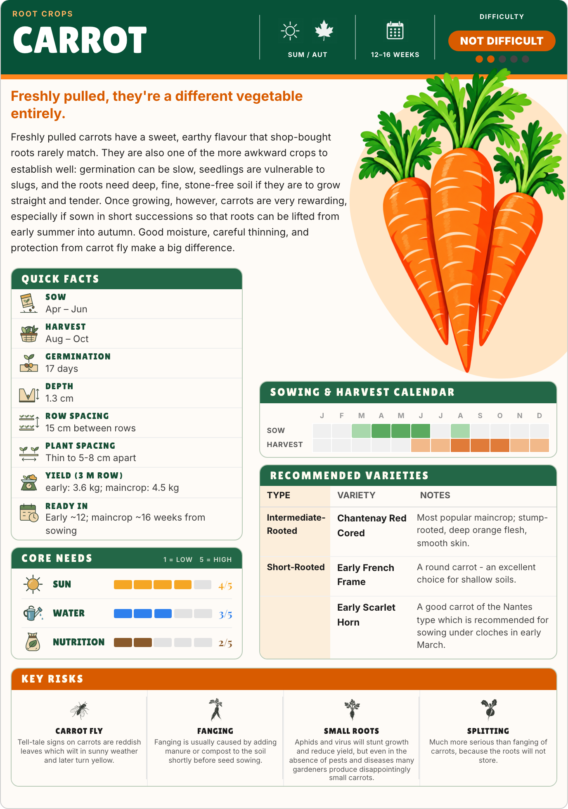

Carrot · Garden Green refinement
A little more of cover C.
A peach backdrop, a larger crop illustration and foliage crossing the orange rule. The drawing and background reach towards the page edge, while the advice and widgets keep their existing positions.
Current Garden Green
The approved starting point.
 Save current PNG
Save current PNGWith C’s playful edges
Peach shape · 10% larger hero · leaves across the banner edge.


Save new PNG